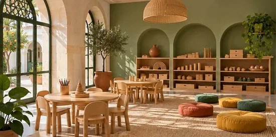
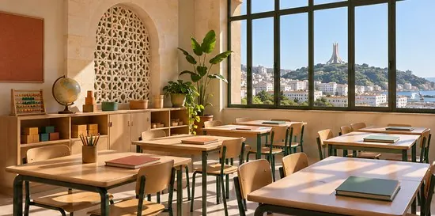
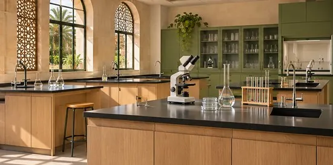

البرامج
صور توضيحية لمساحات التعلّم في هذا التصميم.

الروضة
تنمية اللغة الشفهية والمهارات الحركية والتفاعل مع الآخرين من خلال ورشات قصيرة وقصص ولعب موجّه.
تحضير الزيارة
الابتدائي
القراءة والكتابة والرياضيات في صميم البرنامج الأسبوعي، وتتيح المشاريع الصفية للتلاميذ عرض أعمالهم.
تحضير الزيارة
